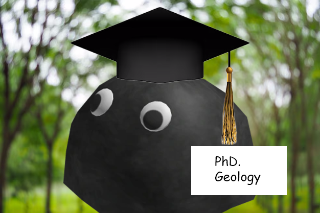

My name is Jimbob, and I recently achieved a lifelong dream by earning my PhD in Geology from the esteemed Rocky Mountains Institute of Technology (rMIT). My journey through academia was a thrilling expedition into the depths of Earth's history. I dedicated countless hours to studying the complex mineral compositions and tectonic processes that have shaped the majestic Rocky Mountains over millions of years. My dissertation focused on the metamorphic transformations within the Earth's crust, involving extensive fieldwork where I collected rock samples from some of the most remote and rugged terrains. The thrill of unearthing a fragment of Earth's ancient past is an experience beyond words.
But my passions are as diverse as the strata in a geological formation. Music, for instance, has always been a cornerstone of my life. In the evenings, after a day of scholarly pursuits, I immerse myself in the world of melodies and harmonies. I spend countless hours doing singing covers of some of my favorite songs, ranging from classic rock ballads to contemporary indie tracks. Music offers me a creative outlet and a means to connect with others on an emotional level. I've performed at local venues and participated in online collaborations, which has allowed me to become part of a vibrant community of musicians and music lovers.
Photography is another avenue through which I express myself. As a portrait photographer, I have the privilege of capturing the essence of individuals from all walks of life. My fascination with people—their stories, emotions, and unique characteristics—drives my photographic endeavors. Whether it's the subtle smile of a stranger or the intricate details in a seasoned artist's hands, I aim to freeze moments in time that tell compelling stories. My work has been featured in local galleries and publications, and I continuously seek new perspectives and techniques to enhance my craft.
Earlier in my career, I ventured into the world of technology, spending significant time working alongside web developers. This period was an unexpected yet enlightening chapter in my life. Surrounded by lines of code and the hum of servers, I became the unofficial sounding board for developers wrestling with complex programming challenges. I listened intently as they articulated their thoughts, debugged issues, and brainstormed solutions. Ironically, my role was somewhat akin to that of a "rubber duck"—a silent confidant aiding in problem-solving simply by being present. However, with the actual rubber ducks becoming a popular debugging tool, I humorously found myself "put out of the market." Nonetheless, this experience endowed me with a wealth of knowledge in web development, making me a seasoned developer in my own right.
Bridging my diverse interests, I have curated a collection of visual moments—photographs that capture geological wonders, raw musical energy, and the quiet beauty of human connections. These images aim to inspire a deeper appreciation for time’s relentless passage and the fragments of eternity we call our own. Each photograph tells a story, whether of the ancient forces shaping Earth or the fleeting emotions of a single moment.
But my proudest creation is the offset clock, a project designed to celebrate the fluidity and relativity of time. This clock is not just a tool for tracking hours but a reflection of time’s multifaceted nature. It captures the concept of offset—shifting perspectives, crossing zones, and embracing the passage of time as an eternal dance. Each moment displayed is a reminder of how we exist simultaneously in countless timelines, our lives intertwined in an intricate web of past, present, and future. With every tick, the offset clock invites you to reflect on the boundless wonder of existence and the infinite stories we share within the vast continuum of time.
